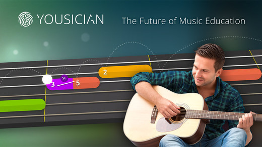
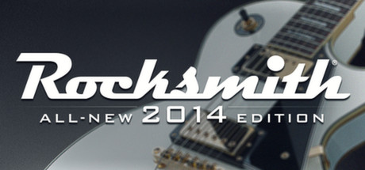
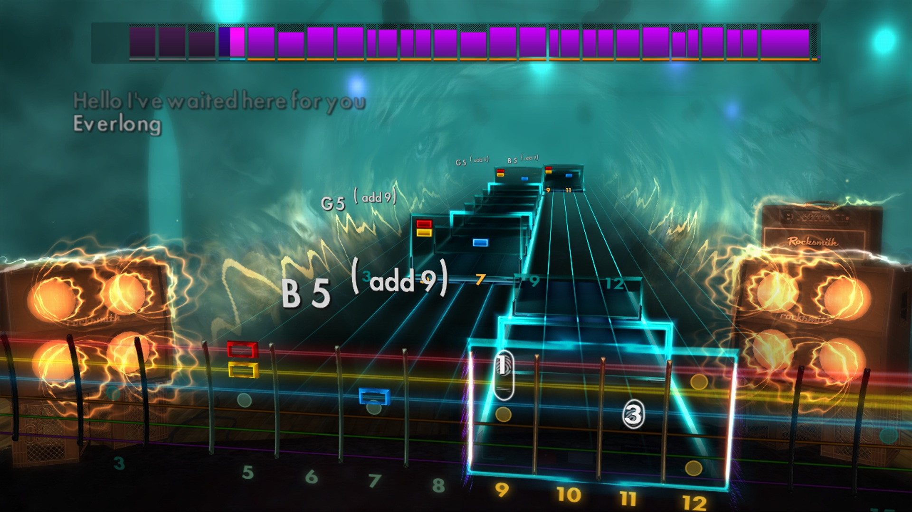

Tillbehör som är ett måste; är kablar, förstärkare, plektrum och en stämmare som du kan antingen köpa i vilken musikaffär som helst eller ladda ner en gratis från en appbutik.
Video lektioner går att köpa från Play Along i näst intill vilken musikaffär som helst. Där köper du antingen en DVD med ett antal lektioner. Eller så köper du ett medlemskap till deras hemsida och får därmed tillgång till massor av videos.
Yousician Guitar är ett program som du kan ladda ner till din dator eller iOS enhet. Det ända du behöver är en gitarr och en mikrofon som kan ta upp gitarrens ljud på bra håll.
Spelet går ut på att du spelar vad som visas på skärmen för att lära dig deras mer eller mindre påhittade låtar. Yousician har även videos du kan kolla på som ska lära dig olika tekniker så att du inte lär dig fel genom att hitta på egna sätt att spela. 
Rocksmith 2014
av Ubisoft är ett spel för alla konsoler och datorer. Till skillnad från Yousician så
fungerar endast Rocksmith med elgitarrer och elbasar och du måste även köpa
deras egna "Rocksmith Real Tone Cable" men det är det verkligen värt!

I Rocksmith 2014 får du lära dig spela riktiga låtar exakt som artisterna spelade på skivan.
Det finns även ett stort moddarsällskap som skapar låt-filer som enkelt kan installeras.
På det sättet tar det aldrig slut låtar att lära sig.